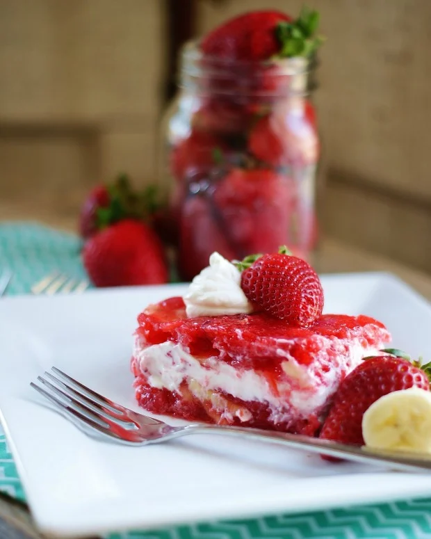

Jay, A Sailor's Return Sinful Salad

About this recipe
Susan Brown says, "This has been Jay's birthday cake since he was about 14 or 15 years old".
When he would come home on leave from the Navy his first request would be this delicious Sinful Salad.
Not bad considering it was created by a family of devout Christians! Makes 12 servings at 225 cals.
Ingredients
1 6 oz pkg of Strawberry Jello (no off brands please)
1 Cup of Boiling Water
3 Medium Bananas Mashed
1 Cup Chopped Pecans
2 10 oz pkg Frozen Strawberries thawed in sugar
1 20 oz can crushed pineapple drained
1 Large bowl of Cool Whip (off brand okay)
Instructions
- In medium bowl, combine Jello and hot water. Stir until dissolved.
Cool and add bananas, pecans, strawberries, and pineapple
- Divide mixture in half. Pour half into a 12 x 8 pan.
- Refrigerate until set (approximately 1 hour)
- Keep remaining Jello mixture at room temperature
- Spread Cool Whip evenly over set Jello in pan
- Pour remaining Jello carefully onto Cool Whip
- Cover and refrigerate until set (about 1 1/2 hours)
- Garnish with fresh cut strawberries